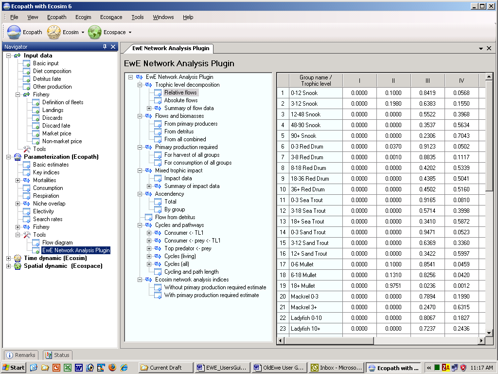

Tools currently available in Ecopath are the Flow diagram and the EwE network analysis plugin.
Figure 7.3. Flow diagram
The Ecopath software links concepts developed by theoretical ecologists, especially the network analysis theory of Ulanowicz (1986), with those used by biologists involved with fisheries, aquaculture and farming systems research. The Network analysis component of Ecopath is included as a plugin under the Tools node under the Parameterization node in the Navigator window. It can also be accessed from the Ecopath menu.
The output forms included in the plug in include: Trophic level decomposition, Flows and biomasses, Primary production required, Mixed trophic impact, Ascendancy, Flow from detritus, Cycles and pathways, Network analysis indices in Ecosim. The notes on these sections give only brief accounts of the concepts from theoretical ecology included in Ecopath. For complete descriptions, we refer to the literature cited in the respective sections.
Note that because the network analysis feature is a plugin, the above components are accessed via a separate menu that is displayed when you select the Network analysis node (see Figure 7.4). You can re-size the Navigator window and the Network analysis menu by dragging the side of their respective windows. You can also hide the Navigator window using the AutoHide button () in the top corner of the window.
Note: to be able to access the EwE Network Analysis Plugin, it must have been installed with EwE 6. If you cannot access the EwE Network Analysis Plugin, you may need to re-instal the software (see How to obtain the Ecopath with Ecosim 6.0 software). During the setup process, you will be prompted to check a box to install the EwE Network Analysis Plugin.

Figure 7.4. The EwE Network Analysis Plugin menu.